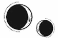

CAPÍTULO 78
Cuatro años más tarde
—Mamá.
Helena levantó la vista de la tintura que estaba preparando, uno de los remedios más demandados en el pueblo. Enid estaba sentada en la cocina viéndola trabajar.
Desde que Pol se había marchado, la niña había perdido buena parte de su carácter juguetón. Kaine y Helena habían intentado devolverle su alegría y encontrarle niños de los que pudiera hacerse amiga, pero Enid siempre se había mostrado reticente a socializar.
Había demasiados obstáculos: no podía hablar de la alquimia, tampoco mencionar el verdadero nombre de Kaine o de Helena, ni revelar adónde se habían ido Pol y Lila. Todas aquellas reglas y barreras la ponían de los nervios y, en consecuencia, había preferido quedarse en casa y salir solo para acompañar a sus padres o sacar a Cobalto a pasear cada día.
En las noches más oscuras, Kaine también aprovechaba para llevarla a dar una vuelta a lomos de Amaris. A veces volaban a otras islas juntos, pero Enid nunca había mostrado interés en hacer amigos, sin importar cuál fuera el destino de su viaje.
Lo único que le daba color a su vida eran las dos semanas que su familia y ella pasaban cada verano en la ciudad portuaria del continente norteño, donde visitaban a Lila y a Pol.
—¿Por qué tienes esos agujeros en las muñecas? —le preguntó—. No he visto a nadie más que los tenga.
A Helena se le encogió el corazón al bajar la mirada. Solía procurar llevarlos cubiertos, pero había estado tan centrada en el trabajo que se había arremangado sin darse cuenta. En cualquier caso, haber conseguido ocultarlos durante ocho años a una niña curiosa había sido todo un logro.
—No, no hay mucha gente que los tenga —murmuró—. Durante la guerra, algunos creyeron que podrían ganar si el bando contrario se quedaba sin resonancia, así que intentaron buscar maneras de anularla. Y… estos agujeros fueron una de esas ideas.
—¿Hicieron que te quedaras sin resonancia? —preguntó la niña acercándose para mirarlos de cerca.
Helena presionó los labios y asintió.
—Así es.
—Pero ya te ha vuelto, ¿no?
—Tu padre me la devolvió —dijo con un asentimiento—. Fue hace mucho tiempo, pero algunas cicatrices nunca curan. Son raras, ¿verdad?
Enid le tocó una con curiosidad.
—¿Te capturaron durante la guerra?
A Helena se le formó un nudo en la garganta. Dio un paso hacia atrás, sacó una pastilla del armario y se la tragó rápidamente con un vaso de agua. Siempre había sabido que tarde o temprano acabarían teniendo aquella conversación. Enid se estaba haciendo mayor y ya no podían evitar sus preguntas, sobre todo porque estaba desesperada por viajar a Paladia y estudiar alquimia como Pol, que acababa de empezar su primer año en la Academia.
—Sí —admitió al final—. Me atraparon durante un tiempo y no fue nada agradable. Por eso decidí huir y tenerte a ti, que era algo mucho más divertido. —Cuando Helena vio a Kaine entrar en la estancia, se puso tensa—. E, ¿te importaría acercarte al pueblo y traer algo de queso para la cena? Se nos ha acabado.
Enid se levantó de un salto y su pelo rizado voló en todas direcciones antes de desaparecer por la puerta.
—¿Qué pasa? —preguntó Kaine en cuanto la niña se hubo marchado.
—Enid se acaba de fijar en las cicatrices de los grilletes —explicó ella sin atreverse a mirarlo a los ojos.
—¿Y qué le has dicho?
Helena inspiró hondo.
—Solo lo que he considerado que estaba preparada para saber. No le he mentido.
Kaine se limitó a arquear una ceja. Helena apretó los dientes, se acercó a una de las estanterías y sacó un periódico.
—Hoy ha llegado una caja llena. Encontré esto mientras les echaba un ojo.
Levantó el papel. «Una criminal de guerra aparece ahogada en Hevgoss».
A Kaine se le iluminó la mirada.
—Era Stroud —apuntó Helena bajando la cabeza para estudiar el artículo—. La han encontrado en un lago. Dicen que sufrió un ataque al corazón mientras nadaba. Están investigando al gobierno de Hevgoss, porque, según parece, le dieron asilo e inmunidad a cambio de que investigara para ellos. Lo cual es irónico teniendo en cuenta que declararon culpables a todos los guardias que pasaron por los juicios que presidieron. Decidieron perdonar en secreto a la peor persona de todas.
Se hizo un breve silencio.
—Es una pena que no fuera asesinada —dijo finalmente Kaine.
—Todo apunta a que lo fue —siseó Helena. Él la miró impasible—. Para. Ni se te ocurra mentirme.
Kaine dejó escapar un suave suspiro y, cuando levantó la vista, la frialdad volvió a instalarse en su rostro como un témpano de hielo. El Kaine que era todo amabilidad, sonrisas y largos monólogos, la versión de sí mismo que mostraba en la isla cuando Enid estaba presente, desapareció y quedó reemplazada una vez más por su verdadero yo, frío y afilado como una hoja de acero.
—¿Por qué lo has hecho? —preguntó Helena, que tenía la sensación de estar desgarrándose por dentro—. ¿No has tenido ya suficiente? ¿Por qué has corrido un riesgo así? ¿Te paraste a pensar en algún momento en lo que habría ocurrido si te hubieran…?
—Tuve cuidado —la interrumpió él, aunque no para justificar sus acciones—. ¿De verdad creías que iba a dejar que viviera?
Helena intentó tragar saliva. Había pasado todo el día tratando de mantener su ritmo cardiaco bajo control, pero aquello había sido la gota que colmó el vaso.
—Me has mentido. Lo hiciste cuando fuimos a la zona portuaria, ¿verdad? Cuando dijiste que tenías que encargarte de un asunto económico. Ahora, cada vez que vayas a… a cualquier lado, me pasaré las horas preguntándome dónde estarás de verdad. Y temiendo que no regreses a mi lado…
Se le rompió la voz.
Kaine trató de abrazarla, pero ella se alejó de él y se llevó una mano al pecho para regular el ritmo de sus latidos y así seguir hablando y demostrarle su enfado. Porque estaba muy muy enfadada con él.
—¿Es que acaso no soy suficiente para ti? ¿Tan insatisfecho estás con esta vida que prefieres correr el riesgo de morir con tal de vengarte? —Le ardían los ojos—. Dentro de unos años tendremos que contarle a Enid quién eres. Pronto empezará el colegio y, aunque sea aquí en Etras, cuando le hablen de la guerra mencionarán tu nombre. Ambos sabemos dónde va a acabar y allí ya no habrá manera de ocultarle nada. Cuando se entere, su mundo se pondrá patas arriba…, incluso si eres tú quien se lo cuenta primero.
Kaine apretó los dientes.
—No…
—Nadie puede tener todo lo que quiere en esta vida, ¿recuerdas? Me lo dijiste tú. Me dijiste que llegaría un momento en que comprendería que no iba a poder tenerlo todo, que tendría que elegir y conformarme. Pensaba que habíamos elegido esto. ¿Me vas a decir ahora que me he estado mintiendo a mí misma durante todos estos años?
Los pulmones se le contrajeron violentamente y un terrible silbido le trepó por la garganta.
—Merecía morir después de lo que te hizo —dijo él, que se negaba a ceder y no mostraba remordimiento alguno—. No iba a permitir que escapara después de averiguar dónde se escondía.
—No deberías haberla buscado. Tendrías que haberlo dejado estar. —Helena habló negando con la cabeza, pero, tras fulminarlo con la mirada un segundo más, acabó echándose a llorar—. No sabes lo que me alegro de que esté muerta.
Kaine dio dos rápidas zancadas y la atrajo hacia sí antes de que Helena tuviera oportunidad de apartarse, así que ella cerró los puños en torno a su camisa y se aferró a él.
—Espero que la hicieras sufrir, aunque habría preferido que no te hubieras encargado tú de ella. ¿Por qué siempre tienes que encargarte tú de estas cosas? —Enterró el rostro en su pecho—. La odiaba. La odiaba con toda mi alma. Me alegro de que esté muerta.
—Lo sé —dijo él rodeándola con los brazos—. Pero ya no está. No queda nadie que pueda hacerte daño.
Diez años más tarde
Permanecieron con las manos entrelazadas mientras las últimas volutas de humo del barco se desvanecían.
—Ya solo quedamos nosotros —dijo Helena con aire pensativo.
Kaine permaneció en silencio, con los ojos plateados clavados en el mar, como si todavía pudiera distinguir la silueta del barco tras la curva del horizonte.
Helena le estrechó la mano.
—Sabes por qué se marcha, ¿verdad?
—Sí… —dijo él con un estremecimiento.
La joven apoyó la cabeza contra su hombro.
—Supongo que era inevitable. En esta familia no estamos hechos para dejar pasar las cosas.
—Yo al menos he tenido mis momentos —resopló divertido—. Pero tú…
Ella se rio y alzó la vista. Todavía le sorprendía lo mucho que echaba de menos el blanco plateado de los cabellos del Kaine joven. Seguía tiñéndose para pasar desapercibido, pero en un par de años podría dejar de hacerlo. Por suerte, sus ojos eran los mismos de siempre. Por mucho tiempo que pasara mirándolos, Helena siempre encontraba nuevos detalles en la forma en que el color cambiaba, en los destellos de emoción que los surcaban de vez en cuando.
Kaine le devolvió la mirada y el mundo se desvaneció a su alrededor.
A Helena le dio un vuelco el corazón.
—¿Y ahora qué hacemos?
—Cualquier cosa. —Kaine curvó una comisura de sus labios para esbozar esa sonrisa que se reservaba siempre para ella—. Lo que tú quieras.